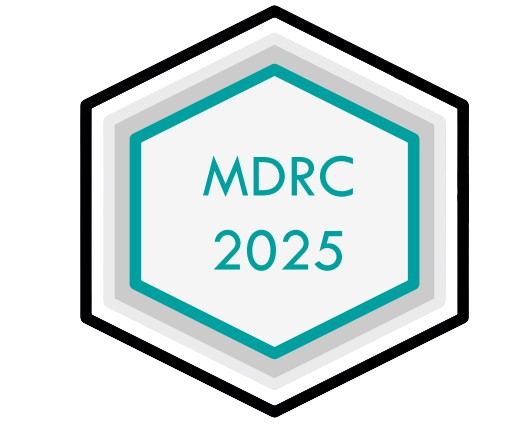

<footer>
        <div class="container">
            <div class="footer-content">
                <div>
                    <div class="footer-logo">
                        
                    </div>
                    <p>Management Doctoral Research Colloquium<br>Department of Management Studies<br>National Institute of Technology Durgapur</p>
                    <div class="social-icons">
                        <a href="#"><i class="fab fa-facebook-f"></i></a>
                        <a href="#"><i class="fab fa-twitter"></i></a>
                        <a href="#"><i class="fab fa-linkedin-in"></i></a>
                        <a href="#"><i class="fab fa-instagram"></i></a>
                    </div>
                </div>
                
                <div>
                    <h3 style="color: white;">Quick Links</h3>
                    <ul style="color: rgba(255,255,255,0.8);">
                        <li><a href="#home" style="color: rgba(255,255,255,0.8);">Home</a></li>
                        <li><a href="#about" style="color: rgba(255,255,255,0.8);">About Conference</a></li>
                        <li><a href="#tracks" style="color: rgba(255,255,255,0.8);">Conference Tracks</a></li>
                        <li><a href="#committee" style="color: rgba(255,255,255,0.8);">Committee</a></li>
                        <li><a href="#dates" style="color: rgba(255,255,255,0.8);">Important Dates</a></li>
                    </ul>
                </div>
                
                <div>
                    <h3 style="color: white;">Contact Us</h3>
                    <p style="color: rgba(255,255,255,0.8);">
                        <i class="fas fa-envelope" style="margin-right: 10px;"></i> mdrc.dms@nitdgp.ac.in<br>
                        <i class="fas fa-phone-alt" style="margin-right: 10px;"></i> +91 9007428551<br>
                        <i class="fas fa-map-marker-alt" style="margin-right: 10px;"></i> NIT Durgapur, West Bengal, India
                    </p>
                </div>
            </div>
            
            <div class="copyright">
                <p>© 2025 MDRC - Management Doctoral Research Colloquium. All Rights Reserved.</p>
                <p>Organized by Department of Management Studies, NIT Durgapur</p>
            </div>
            <div class="container">
                <p style="margin: 0;text-align:center;font-size:10px">Developed by Sumit Maitra</p>
            </div>
        </div>
    </footer>

    <script>
        // Mobile Navigation Toggle
        document.querySelector('.mobile-toggle').addEventListener('click', function() {
            document.querySelector('.nav-links').classList.toggle('show');
        });
        
        // Smooth scrolling for navigation links
        document.querySelectorAll('a[href^="#"]').forEach(anchor => {
            anchor.addEventListener('click', function (e) {
                e.preventDefault();
                
                // Close mobile menu if open
                document.querySelector('.nav-links').classList.remove('show');
                
                document.querySelector(this.getAttribute('href')).scrollIntoView({
                    behavior: 'smooth'
                });
            });
        });
        
        // Active link highlighting
        window.addEventListener('scroll', function() {
            const sections = document.querySelectorAll('section');
            const navLinks = document.querySelectorAll('.nav-links a');
            
            let current = '';
            
            sections.forEach(section => {
                const sectionTop = section.offsetTop;
                const sectionHeight = section.clientHeight;
                
                if (pageYOffset >= (sectionTop - 100)) {
                    current = section.getAttribute('id');
                }
            });
            
            navLinks.forEach(link => {
                link.classList.remove('active');
                if (link.getAttribute('href').substring(1) === current) {
                    link.classList.add('active');
                }
            });
        });
        
        // Image Slider Functionality
        let currentSlide = 0;
        const slides = document.getElementById('slides');
        const totalSlides = document.querySelectorAll('.slide').length;
        const navButtons = document.querySelectorAll('.slider-nav-btn');
        
        // Function to update the slider position
        function updateSlider() {
            slides.style.transform = `translateX(-${currentSlide * 100}%)`;
            
            // Update navigation buttons
            navButtons.forEach((btn, index) => {
                btn.classList.toggle('active', index === currentSlide);
            });
        }
        
        // Function to change slide
        function changeSlide(direction) {
            currentSlide = (currentSlide + direction + totalSlides) % totalSlides;
            updateSlider();
        }
        
        // Function to go to a specific slide
        function goToSlide(slideIndex) {
            currentSlide = slideIndex;
            updateSlider();
        }
        
        // Auto-advance slides every 5 seconds
        setInterval(() => {
            changeSlide(1);
        }, 5000);
        
        // Initialize slider
        updateSlider();
        
        // Simple animation for cards on scroll
        document.addEventListener('DOMContentLoaded', function() {
            const observer = new IntersectionObserver((entries) => {
                entries.forEach(entry => {
                    if (entry.isIntersecting) {
                        entry.target.style.opacity = "1";
                        entry.target.style.transform = "translateY(0)";
                    }
                });
            }, { threshold: 0.1 });
            
            document.querySelectorAll('.committee-member, .track-card, .date-card, .contact-card').forEach(card => {
                card.style.opacity = "0";
                card.style.transform = "translateY(20px)";
                card.style.transition = "opacity 0.6s ease, transform 0.6s ease";
                observer.observe(card);
            });
        });
    </script>
</body>
</html>
